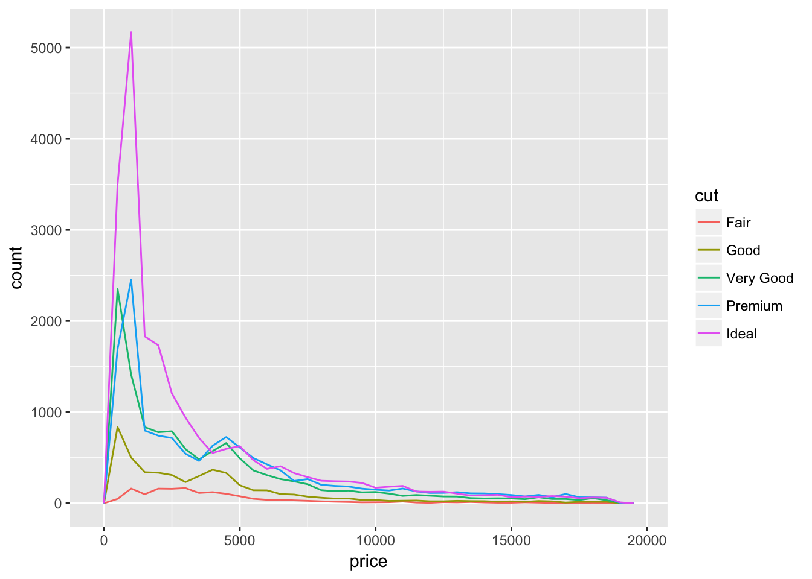
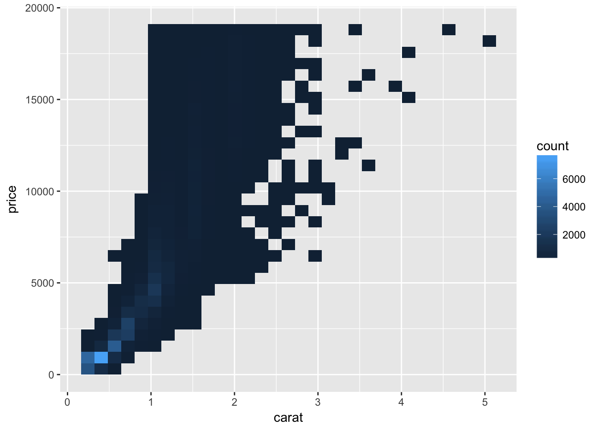
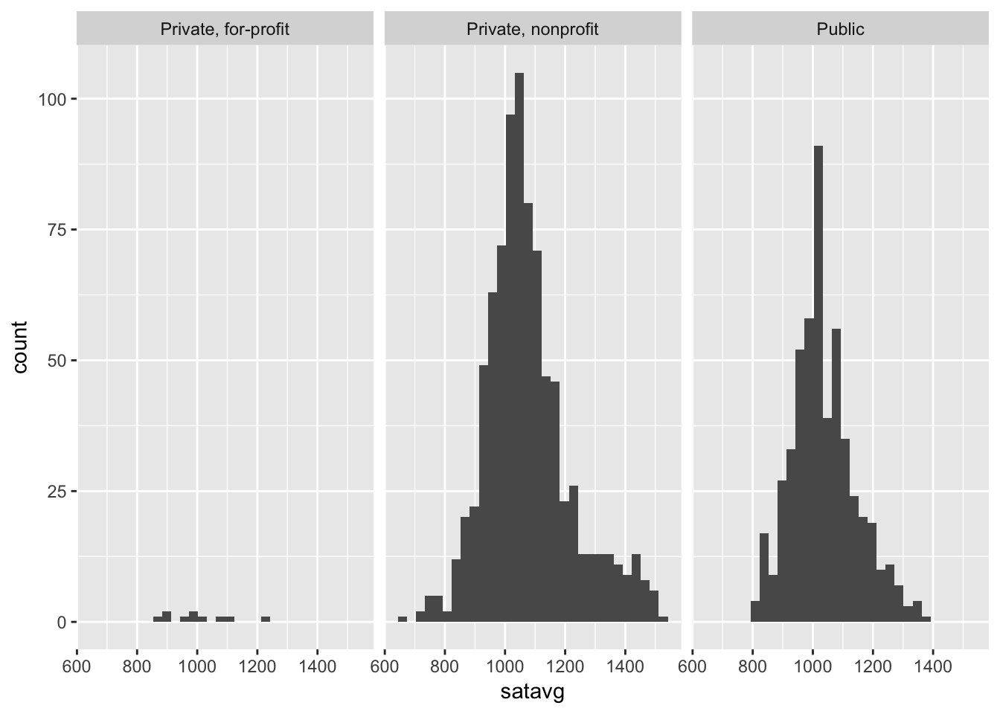
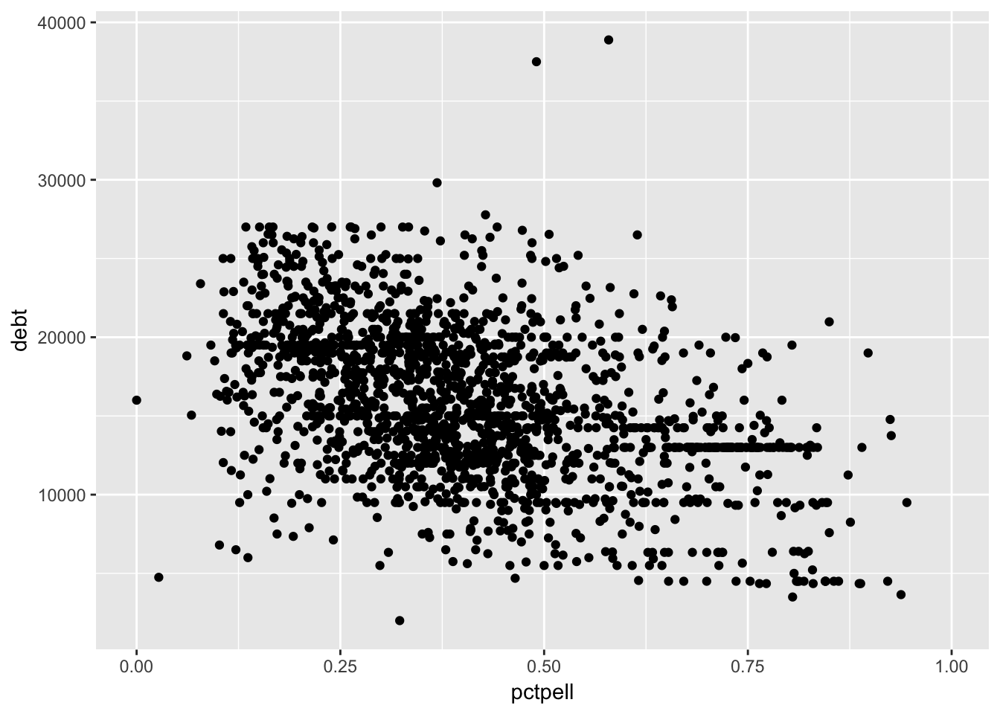

Exploratory data analysis
Objectives
- Define exploratory data analysis (EDA) and types of pattern exploration
- Demonstrate types of graphs useful for EDA and precautions when interpreting them
- Practice transforming and exploring data using Department of Education College Scorecard data
library(tidyverse)## Loading tidyverse: ggplot2
## Loading tidyverse: tibble
## Loading tidyverse: tidyr
## Loading tidyverse: readr
## Loading tidyverse: purrr
## Loading tidyverse: dplyr## Conflicts with tidy packages ----------------------------------------------## filter(): dplyr, stats
## lag(): dplyr, statsExploratory data analysis (EDA) and types of pattern exploration
Exploratory data analysis process
- Generate questions about your data.
- Search for answers by visualising, transforming, and modeling your data.
- Use what you learn to refine your questions and or generate new questions.
- Rinse and repeat until you publish a paper.
EDA is fundamentally a creative process - it is not an exact science. It requires knowledge of your data and a lot of time. At the most basic level, it involves answering two questions
- What type of variation occurs within my variables?
- What type of covariation occurs between my variables?
Visualizing variation
Categorical variables
Variables with a fixed, discrete set of potential values. Typically visualized using a bar graph.
ggplot(data = diamonds) +
geom_bar(mapping = aes(x = cut))
dplyr and the count() function can be used to manually calculate each category’s frequency.
diamonds %>%
count(cut)## # A tibble: 5 × 2
## cut n
## <ord> <int>
## 1 Fair 1610
## 2 Good 4906
## 3 Very Good 12082
## 4 Premium 13791
## 5 Ideal 21551Continuous variables
Continuous variables can take on any of an infinite set of ordered values. Histograms are used to visualize these distributions by “binning” the continuous values into discrete chunks, then drawing a bar chart for the corresponding chunks.
By default, geom_histogram divides the data into 30 discrete bins of equal width.
ggplot(data = diamonds) +
geom_histogram(mapping = aes(x = carat))## `stat_bin()` using `bins = 30`. Pick better value with `binwidth`.
The binwidth determines how large each bin will be. Different bin sizes may reveal different characteristics about the variable and can be manually set.
ggplot(data = diamonds) +
geom_histogram(mapping = aes(x = carat), binwidth = 0.5)
ggplot(data = diamonds) +
geom_histogram(mapping = aes(x = carat), binwidth = 0.1)
Detecting outliers
ggplot(diamonds) +
geom_histogram(mapping = aes(x = y), binwidth = 0.5)
Why does this graph have such a long tail on the right? Nothing appears to be out there.
ggplot(diamonds) +
geom_histogram(mapping = aes(x = y), binwidth = 0.5) +
coord_cartesian(ylim = c(0, 50))
Oh, there actually is something out there.
diamonds %>%
filter(y < 3 | y > 20) %>%
arrange(y)## # A tibble: 9 × 10
## carat cut color clarity depth table price x y z
## <dbl> <ord> <ord> <ord> <dbl> <dbl> <int> <dbl> <dbl> <dbl>
## 1 1.00 Very Good H VS2 63.3 53 5139 0.00 0.0 0.00
## 2 1.14 Fair G VS1 57.5 67 6381 0.00 0.0 0.00
## 3 1.56 Ideal G VS2 62.2 54 12800 0.00 0.0 0.00
## 4 1.20 Premium D VVS1 62.1 59 15686 0.00 0.0 0.00
## 5 2.25 Premium H SI2 62.8 59 18034 0.00 0.0 0.00
## 6 0.71 Good F SI2 64.1 60 2130 0.00 0.0 0.00
## 7 0.71 Good F SI2 64.1 60 2130 0.00 0.0 0.00
## 8 0.51 Ideal E VS1 61.8 55 2075 5.15 31.8 5.12
## 9 2.00 Premium H SI2 58.9 57 12210 8.09 58.9 8.06What do we do with this knowledge? Do we exclude outliers because they are extremely different from the “normal” data? Do we concentrate on these outliers because they are the most interesting component? This is a judgment call on your part. Follow normal practices in your field, though I always am weary of throwing out data unless I have strong evidence it is simply miscoded.
Covariation
Categorical and continuous variable
Frequency polygon (line chart version of a histrogram)
With counts:
ggplot(data = diamonds, mapping = aes(x = price)) +
geom_freqpoly(mapping = aes(colour = cut), binwidth = 500)
With density (standardized count so that the area under each frequency polygon is one):
ggplot(data = diamonds, mapping = aes(x = price, y = ..density..)) +
geom_freqpoly(mapping = aes(colour = cut), binwidth = 500)
Boxplot
ggplot(data = diamonds, mapping = aes(x = cut, y = price)) +
geom_boxplot()
Two categorical variables
geom_count():
ggplot(data = diamonds) +
geom_count(mapping = aes(x = cut, y = color))
geom_tile():
diamonds %>%
count(color, cut) %>%
ggplot(mapping = aes(x = color, y = cut)) +
geom_tile(mapping = aes(fill = n))
Two continuous variables
ggplot(data = diamonds) +
geom_point(mapping = aes(x = carat, y = price))
Avoid overlap of points
Use alpha aesthetic to change transparency
ggplot(data = diamonds) +
geom_point(mapping = aes(x = carat, y = price), alpha = .2)
Add a smoothing line
ggplot(data = diamonds, mapping = aes(x = carat, y = price)) +
geom_point() +
geom_smooth()## `geom_smooth()` using method = 'gam'
Bin the data
ggplot(data = diamonds) +
geom_bin2d(mapping = aes(x = carat, y = price))
Resources for exploring and visualizing data
Data Visualization with ggplot2 Cheat Sheet - print this cheatsheet off! It is a great guide for implementing functions from ggplot2. I strongly encourage you to refer to the first page. If you ever wonder what type of graph is appropriate for the variables you wish to visualize, this chart will guide you a graph that makes sense given the number and type (continuous vs. discrete) of variables.
Exploring college education
The Department of Education collects annual statistics on colleges and universities in the United States. I have included a subset of this data from 2013 in the rcfss library from GitHub. To install the package, run the command devtools::install_github("uc-cfss/rcfss") in the console.
If you don’t already have the
devtoolslibrary installed, you will get an error. Go back and install this first usinginstall.packages("devtools"), then rundevtools::install_github("uc-cfss/rcfss").
library(rcfss)
data("scorecard")
scorecard## # A tibble: 1,849 × 12
## unitid name state type
## <int> <chr> <chr> <chr>
## 1 450234 ITT Technical Institute-Wichita KS Private, for-profit
## 2 448479 ITT Technical Institute-Swartz Creek MI Private, for-profit
## 3 456427 ITT Technical Institute-Concord CA Private, for-profit
## 4 459596 ITT Technical Institute-Tallahassee FL Private, for-profit
## 5 459851 Herzing University-Brookfield WI Private, for-profit
## 6 482477 DeVry University-Illinois IL Private, for-profit
## 7 482547 DeVry University-Nevada NV Private, for-profit
## 8 482592 DeVry University-Oregon OR Private, for-profit
## 9 482617 DeVry University-Tennessee TN Private, for-profit
## 10 482662 DeVry University-Washington WA Private, for-profit
## # ... with 1,839 more rows, and 8 more variables: cost <int>,
## # admrate <dbl>, satavg <dbl>, avgfacsal <dbl>, pctpell <dbl>,
## # comprate <dbl>, firstgen <dbl>, debt <dbl>Type ?scorecard in the console to open up the help file for this data set. This includes the documentation for all the variables. Use your knowledge of dplyr and ggplot2 functions to answer the following questions.
Which type of college has the highest average SAT score?
NOTE: This time, use a graph to visualize your answer, not a table.
Click for the solution
We could use a boxplot to visualize the distribution of SAT scores.
ggplot(scorecard, aes(type, satavg)) +
geom_boxplot()## Warning: Removed 471 rows containing non-finite values (stat_boxplot).
According to this private, nonprofit schools have the highest average SAT score, followed by public and then private, for-profit schools. But this doesn’t reveal the entire picture. What happens if we plot a histogram or frequency polygon?
ggplot(scorecard, aes(satavg)) +
geom_histogram() +
facet_wrap(~ type)## `stat_bin()` using `bins = 30`. Pick better value with `binwidth`.## Warning: Removed 471 rows containing non-finite values (stat_bin).
ggplot(scorecard, aes(satavg, color = type)) +
geom_freqpoly()## `stat_bin()` using `bins = 30`. Pick better value with `binwidth`.## Warning: Removed 471 rows containing non-finite values (stat_bin).
Now we can see the averages for each college type are based on widely varying sample sizes.
ggplot(scorecard, aes(type)) +
geom_bar()
What is the relationship between college attendance cost and faculty salaries? How does this relationship differ across types of colleges?
Click for the solution
# geom_point
ggplot(scorecard, aes(cost, avgfacsal)) +
geom_point() +
geom_smooth()## `geom_smooth()` using method = 'gam'## Warning: Removed 42 rows containing non-finite values (stat_smooth).## Warning: Removed 42 rows containing missing values (geom_point).
# geom_point with alpha transparency to reveal dense clusters
ggplot(scorecard, aes(cost, avgfacsal)) +
geom_point(alpha = .2) +
geom_smooth()## `geom_smooth()` using method = 'gam'## Warning: Removed 42 rows containing non-finite values (stat_smooth).
## Warning: Removed 42 rows containing missing values (geom_point).
# geom_hex
ggplot(scorecard, aes(cost, avgfacsal)) +
geom_hex() +
geom_smooth()## Warning: Removed 42 rows containing non-finite values (stat_binhex).## `geom_smooth()` using method = 'gam'## Warning: Removed 42 rows containing non-finite values (stat_smooth).
# geom_point with smoothing lines for each type
ggplot(scorecard, aes(cost, avgfacsal, color = type)) +
geom_point(alpha = .2) +
geom_smooth()## `geom_smooth()` using method = 'gam'## Warning: Removed 42 rows containing non-finite values (stat_smooth).
## Warning: Removed 42 rows containing missing values (geom_point).
# geom_point with facets for each type
ggplot(scorecard, aes(cost, avgfacsal, color = type)) +
geom_point(alpha = .2) +
geom_smooth() +
facet_grid(. ~ type)## `geom_smooth()` using method = 'gam'## Warning: Removed 42 rows containing non-finite values (stat_smooth).
## Warning: Removed 42 rows containing missing values (geom_point).
How are a college’s Pell Grant recipients related to the average student’s education debt?
Click for the solution
Two continuous variables suggest a scatterplot would be appropriate.
ggplot(scorecard, aes(pctpell, debt)) +
geom_point()## Warning: Removed 75 rows containing missing values (geom_point).
Hmm. There seem to be a lot of data points. It isn’t really clear if there is a trend. What if we jitter the data points?
ggplot(scorecard, aes(pctpell, debt)) +
geom_jitter()## Warning: Removed 75 rows containing missing values (geom_point).
Meh, didn’t really do much. What if we make our data points semi-transparent using the alpha aesthetic?
ggplot(scorecard, aes(pctpell, debt)) +
geom_point(alpha = .2)## Warning: Removed 75 rows containing missing values (geom_point).
Now we’re getting somewhere. I’m beginning to see some dense clusters in the middle. Maybe a hexagon binning plot would help
ggplot(scorecard, aes(pctpell, debt)) +
geom_hex()## Warning: Removed 75 rows containing non-finite values (stat_binhex).
This is getting better. It looks like there might be a downward trend; that is, as the percentage of Pell grant recipients increases, average student debt decreases. Let’s confirm this by going back to the scatterplot and overlaying a smoothing line.
ggplot(scorecard, aes(pctpell, debt)) +
geom_point(alpha = .2) +
geom_smooth()## `geom_smooth()` using method = 'gam'## Warning: Removed 75 rows containing non-finite values (stat_smooth).## Warning: Removed 75 rows containing missing values (geom_point).
This confirms our initial evidence - there is an apparent negative relationship. Notice how I iterated through several different plots before I created one that provided the most informative visualization. You will not create the perfect graph on your first attempt. Trial and error is necessary in this exploratory stage. Be prepared to revise your code again and again.
Session Info
devtools::session_info()## Session info --------------------------------------------------------------## setting value
## version R version 3.3.2 (2016-10-31)
## system x86_64, darwin13.4.0
## ui RStudio (1.0.44)
## language (EN)
## collate en_US.UTF-8
## tz America/Chicago
## date 2017-01-18## Packages ------------------------------------------------------------------## package * version date source
## assertthat 0.1 2013-12-06 CRAN (R 3.3.0)
## backports 1.0.4 2016-10-24 CRAN (R 3.3.0)
## base64enc 0.1-3 2015-07-28 CRAN (R 3.3.0)
## broom * 0.4.1 2016-06-24 CRAN (R 3.3.0)
## car 2.1-4 2016-12-02 CRAN (R 3.3.2)
## caret 6.0-73 2016-11-10 CRAN (R 3.3.2)
## codetools 0.2-15 2016-10-05 CRAN (R 3.3.2)
## colorspace 1.3-2 2016-12-14 CRAN (R 3.3.2)
## config 0.2 2016-08-02 CRAN (R 3.3.0)
## DBI 0.5-1 2016-09-10 CRAN (R 3.3.0)
## devtools 1.12.0 2016-06-24 CRAN (R 3.3.0)
## digest 0.6.11 2017-01-03 CRAN (R 3.3.2)
## dplyr * 0.5.0 2016-06-24 CRAN (R 3.3.0)
## evaluate 0.10 2016-10-11 CRAN (R 3.3.0)
## foreach 1.4.3 2015-10-13 CRAN (R 3.3.0)
## foreign 0.8-67 2016-09-13 CRAN (R 3.3.2)
## gapminder * 0.2.0 2015-12-31 CRAN (R 3.3.0)
## ggplot2 * 2.2.1 2016-12-30 CRAN (R 3.3.2)
## ggrepel * 0.6.5 2016-11-24 CRAN (R 3.3.2)
## ggstance * 0.3 2016-11-16 CRAN (R 3.3.2)
## gridExtra 2.2.1 2016-02-29 cran (@2.2.1)
## gtable 0.2.0 2016-02-26 CRAN (R 3.3.0)
## hexbin * 1.27.1 2015-08-19 CRAN (R 3.3.0)
## highr 0.6 2016-05-09 CRAN (R 3.3.0)
## htmltools 0.3.5 2016-03-21 CRAN (R 3.3.0)
## httr 1.2.1 2016-07-03 CRAN (R 3.3.0)
## iterators 1.0.8 2015-10-13 CRAN (R 3.3.0)
## jsonlite 1.2 2016-12-31 CRAN (R 3.3.2)
## knitr * 1.15.1 2016-11-22 cran (@1.15.1)
## labeling 0.3 2014-08-23 CRAN (R 3.3.0)
## lattice 0.20-34 2016-09-06 CRAN (R 3.3.2)
## lazyeval 0.2.0 2016-06-12 CRAN (R 3.3.0)
## lme4 1.1-12 2016-04-16 cran (@1.1-12)
## lubridate * 1.6.0 2016-09-13 CRAN (R 3.3.0)
## lvplot * 0.2.0.9000 2017-01-06 Github (hadley/lvplot@8ce61c7)
## magrittr 1.5 2014-11-22 CRAN (R 3.3.0)
## MASS 7.3-45 2016-04-21 CRAN (R 3.3.2)
## Matrix 1.2-7.1 2016-09-01 CRAN (R 3.3.2)
## MatrixModels 0.4-1 2015-08-22 CRAN (R 3.3.0)
## memoise 1.0.0 2016-01-29 CRAN (R 3.3.0)
## mgcv 1.8-16 2016-11-07 CRAN (R 3.3.0)
## minqa 1.2.4 2014-10-09 cran (@1.2.4)
## mnormt 1.5-5 2016-10-15 CRAN (R 3.3.0)
## ModelMetrics 1.1.0 2016-08-26 CRAN (R 3.3.0)
## modeltools 0.2-21 2013-09-02 CRAN (R 3.3.0)
## munsell 0.4.3 2016-02-13 CRAN (R 3.3.0)
## nlme 3.1-128 2016-05-10 CRAN (R 3.3.2)
## nloptr 1.0.4 2014-08-04 cran (@1.0.4)
## NLP 0.1-9 2016-02-18 CRAN (R 3.3.0)
## nnet 7.3-12 2016-02-02 CRAN (R 3.3.2)
## nycflights13 * 0.2.1 2016-12-30 CRAN (R 3.3.2)
## pbkrtest 0.4-6 2016-01-27 CRAN (R 3.3.0)
## plyr 1.8.4 2016-06-08 CRAN (R 3.3.0)
## png 0.1-7 2013-12-03 cran (@0.1-7)
## psych 1.6.9 2016-09-17 cran (@1.6.9)
## purrr * 0.2.2 2016-06-18 CRAN (R 3.3.0)
## quantreg 5.29 2016-09-04 CRAN (R 3.3.0)
## R6 2.2.0 2016-10-05 CRAN (R 3.3.0)
## rappdirs 0.3.1 2016-03-28 CRAN (R 3.3.0)
## rcfss * 0.1.0 2017-01-17 local
## Rcpp 0.12.8 2016-11-17 CRAN (R 3.3.2)
## readr * 1.0.0 2016-08-03 CRAN (R 3.3.0)
## readxl * 0.1.1 2016-03-28 CRAN (R 3.3.0)
## reshape2 1.4.2 2016-10-22 CRAN (R 3.3.0)
## rmarkdown 1.3 2016-12-21 CRAN (R 3.3.2)
## rprojroot 1.1 2016-10-29 CRAN (R 3.3.0)
## rsconnect 0.7 2016-12-21 CRAN (R 3.3.2)
## rstudioapi 0.6 2016-06-27 CRAN (R 3.3.0)
## scales 0.4.1 2016-11-09 CRAN (R 3.3.1)
## slam 0.1-40 2016-12-01 CRAN (R 3.3.2)
## sparklyr * 0.5.1 2016-12-19 CRAN (R 3.3.2)
## SparseM 1.74 2016-11-10 CRAN (R 3.3.2)
## stringi 1.1.2 2016-10-01 CRAN (R 3.3.0)
## stringr * 1.1.0 2016-08-19 cran (@1.1.0)
## tibble * 1.2 2016-08-26 cran (@1.2)
## tidyr * 0.6.0 2016-08-12 CRAN (R 3.3.0)
## tidyverse * 1.0.0 2016-09-09 CRAN (R 3.3.0)
## titanic * 0.1.0 2015-08-31 CRAN (R 3.3.0)
## tm 0.6-2 2015-07-03 CRAN (R 3.3.0)
## topicmodels * 0.2-4 2016-05-23 CRAN (R 3.3.0)
## withr 1.0.2 2016-06-20 CRAN (R 3.3.0)
## yaml 2.1.14 2016-11-12 cran (@2.1.14)This work is licensed under the CC BY-NC 4.0 Creative Commons License.